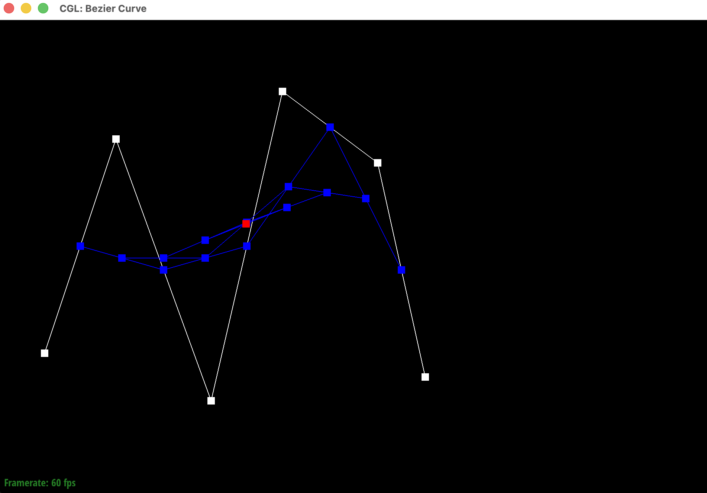
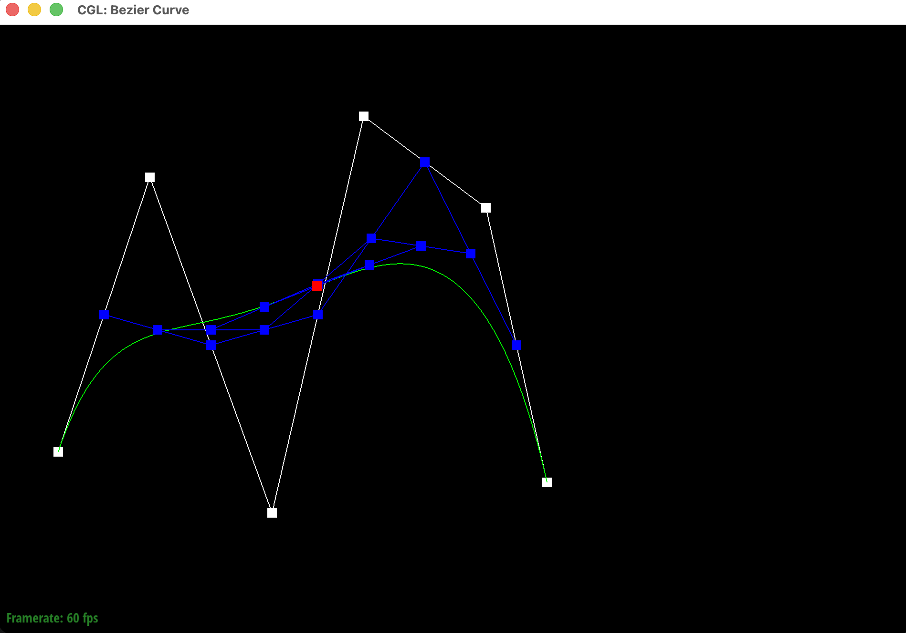
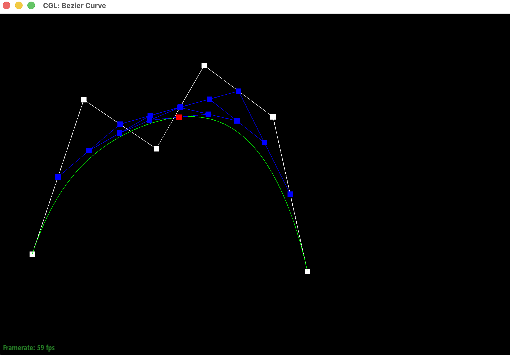
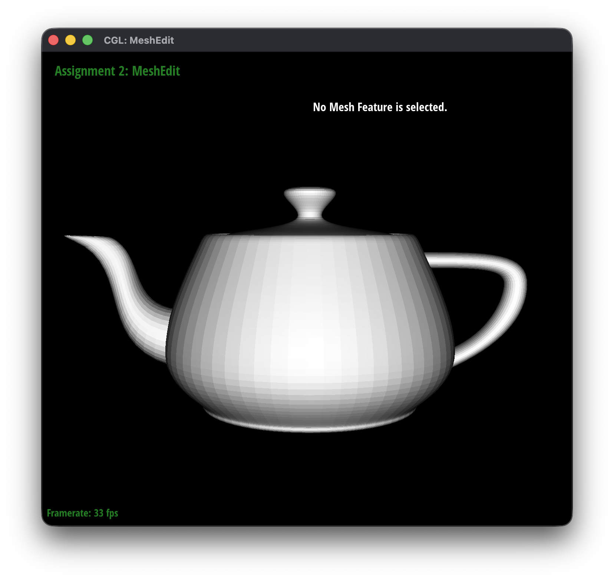

CS184/284A Fall 2026 Homework 2 Write-Up
Link to webpage: https://cal-cs184-student.github.io/hw2-hw2-laurix-writeup/
Link to GitHub repository: https://github.com/cal-cs184-student/hw2-hw2-laurix
Overview
In this homework I worked on two ways to represent 3D shapes: Bezier curves and surfaces, and triangle meshes.
In Section 1, I used de Casteljau's algorithm to evaluate Bezier curves by repeatedly interpolating between control points. Then I extended it to Bezier surfaces by running the same 1D algorithm in two directions, which was enough to render the teapot from its control points.
In Section 2, I worked with triangle meshes stored in a half-edge data structure. I computed area-weighted vertex normals for smooth shading, implemented edge flips and edge splits, and then used those two operations to build Loop subdivision, which makes a mesh smoother by splitting each triangle into 4 and moving the vertices.
The most interesting thing I learned was how much you can build out of a few simple operations.
Section I: Bezier Curves and Surfaces
Part 1: Bezier curves with 1D de Casteljau subdivision
How de Casteljau's algorithm works and how I implemented it
De Casteljau's algorithm is a way to find a point on a Bezier curve using only linear interpolation (lerp). You start with the control points and a value of \( t \) between 0 and 1. For every pair of neighboring points, you find the point that is a fraction \( t \) of the way from the first point to the second:
\[ p_i' = (1 - t)\,p_i + t\,p_{i+1} \]If you start with \( n \) points, this gives you \( n - 1 \) new points. Then you do the same thing again on the new points, and again, until only one point is left. That last point is the point on the Bezier curve at \( t \). If you do this for every \( t \) from 0 to 1, you trace out the whole curve.
For my implementation, I wrote BezierCurve::evaluateStep, which does just one level of the algorithm. It loops over the input points, and for each pair of neighbors (point \( i \) and point \( i+1 \)) it computes \( (1 - t)\,p_i + t\,p_{i+1} \) and adds it to a new vector. Since the loop stops one point before the end, the output always has one less point than the input. The program calls this function over and over (each time I press E), so you can see every level until it reaches the final point on the curve.
Each level of the evaluation
I made my own Bezier curve with 6 control points. The screenshots below show each level of the evaluation, starting from the 6 original control points and ending with the single evaluated point.

|

|

|

|

|
 |
Here is the same curve with all the levels shown and the full Bezier curve turned on (pressing C). You can see that the final point lands exactly on the curve.

A slightly different Bezier curve
Finally, I moved some of the control points around and scrolled to change \( t \). The curve changes shape to follow the new control points, and the evaluated point slides to a different spot along the curve.

Part 2: Bezier surfaces with separable 1D de Casteljau
How de Casteljau extends to Bezier surfaces
A Bezier surface works a lot like a Bezier curve, but now there are two parameters, \( u \) and \( v \), and the control points are in a grid instead of a line. For a bicubic patch like the ones in the teapot, the grid is 4x4, so there are 16 control points.
The idea is that you can split the problem into two rounds of 1D de Casteljau. First, you treat each row of the grid as its own Bezier curve and evaluate it at \( u \). That gives you one point per row (so 4 points for a 4x4 grid). Then, you treat those 4 points as a new Bezier curve going in the other direction and evaluate it at \( v \). The single point you get at the end is the point on the surface at \( (u, v) \). This is why it's called "separable": you handle one direction at a time.
How I implemented it
I implemented it with three functions:
BezierPatch::evaluateStepdoes one level of de Casteljau on 3D points. It's the same as in Part 1 (lerp every pair of neighbors), but it usesVector3Dand takes \( t \) as an argument.BezierPatch::evaluate1Druns the full algorithm on a list of points. It keeps callingevaluateStepuntil only one point is left, then returns that point.BezierPatch::evaluateuses the other two. It loops over every row incontrolPoints, callsevaluate1Don the row with \( u \), and saves the result. Then it callsevaluate1Done more time on those saved points with \( v \) and returns the final point.
Teapot (bez/teapot.bez)
The program calls evaluate at a bunch of \( (u, v) \) values across each patch and connects the results into triangles, which is how the teapot below gets rendered.

Section II: Triangle Meshes and Half-Edge Data Structure
Part 3: Area-weighted vertex normals
How I implemented area-weighted vertex normals
Without vertex normals, every triangle gets one flat normal, so the mesh looks blocky and you can clearly see each face. To make it look smooth, we give each vertex its own normal by averaging the normals of all the triangles around it. Bigger triangles should count more, so it's an area-weighted average.
I implemented this in Vertex::normal. I start with a zero vector \( n \) and grab one of the vertex's halfedges. Then I walk around the vertex one face at a time using h = h->twin()->next(). Taking the twin flips to the other side of the edge, and next moves to the next edge going out of the same vertex. I keep going until I'm back at the halfedge I started with, so I visit every face around the vertex exactly once.
For each face, I first check that it's not a boundary face, because boundary "faces" are just holes in the mesh and not real triangles. If it's a real triangle, I get its three vertex positions: \( p_0 \) is the vertex itself, and \( p_1 \) and \( p_2 \) come from h->next() and h->next()->next(). Then I take the cross product of two of its edges:
This vector points in the direction of the face's normal, and its length is twice the triangle's area. So if I just add it to \( n \) without normalizing it first, bigger triangles automatically count more. That gives me the area weighting without having to compute the areas separately. At the end, I return n.unit() so the final normal has length 1.
Shading with and without vertex normals
Below is dae/teapot.dae with flat shading (the default) and with Phong shading using my vertex normals (pressing Q). With flat shading you can see the edges of every triangle. With Phong shading the teapot looks smooth and the lighting changes gradually across the surface.

|

|
Part 4: Edge flip
How I implemented edge flip
An edge flip takes two triangles that share an edge and swaps that edge to connect the other two corners instead. If the two triangles are (b, c, a) and (c, b, d) sharing edge (b, c), after the flip they become (a, d, c) and (d, a, b) sharing edge (a, d). No elements get added or deleted. We just have to rewire the pointers.
To keep track of everything, I labeled all the pieces: the 4 vertices (a, b, c, d), the 6 halfedges inside the two triangles (h0 to h5), the shared edge e0, and the two faces f0 and f1. I wrote these labels as comments in the code (like // b -> c) so I could check each pointer against the before and after pictures.
In HalfedgeMesh::flipEdge, I first return right away if the edge is on the boundary, since there is no second triangle to flip with. Then I collect all the halfedges, vertices and faces from the "before" picture. After that, I use setNeighbors on all 6 halfedges to give each one its new next, twin, vertex, edge and face. For example, h0 used to go from b to c, and now it goes from a to d. The outer halfedges (h1, h2, h4, h5) keep their twins and edges, but their next pointers and in some cases their faces change.
Finally, I update the halfedge pointers of the vertices, the edge, and the faces. This step is easy to forget. Vertices b and c might have been pointing at h0 or h3, but after the flip those halfedges don't start at b or c anymore. So I set every vertex's halfedge to one that I know still leaves it. To be safe, I reassigned the pointers for every element that was touched, even the ones that might not have changed. It's a few extra lines, but then I don't have to worry about missing one.
Teapot before and after edge flips
Here is the teapot before and after a few edge flips:

|

|
Part 5: Edge split
How I implemented edge split
An edge split adds a new vertex m at the midpoint of an edge (b, c) and connects it to the two opposite corners a and d. So the 2 triangles turn into 4. Unlike the flip, this one creates new stuff: 1 vertex, 3 edges, 6 halfedges, and 2 faces.
I used the same labels as in Part 4 and gave a name to every new element. The original edge e0 becomes the m to c half, and the new edge e1 is the b to m half. e2 connects a and m, and e3 connects m and d. The new vertex goes at the midpoint, \( m = (b + c) / 2 \).
In HalfedgeMesh::splitEdge, I allocate all the new elements, then go through the 4 resulting triangles one at a time and call setNeighbors on the 3 halfedges of each. I reused h0 and h3 for the m to c part of the old edge, so h0 now starts at m instead of b. After that, I reassign the halfedge pointer of every vertex, edge and face involved. The new vertex m points to h0 so that its halfedge goes along the original edge, which is what the spec asks for. Like in the flip, b might have pointed at h0 before, which now starts at m, so I had to point b at a different halfedge.
I also set the isNew flags here because Part 6 needs them. m is marked as a new vertex. e0 and e1 are pieces of the original edge, so they are not new, while e2 and e3 are the new edges that cut across. For boundary edges, my implementation just returns without splitting, so I didn't do the boundary extra credit.
Before and after edge splits
Here is a mesh before and after some edge splits:

|

|
Before and after edge splits and flips
Here is a mesh before and after a mix of edge splits and edge flips:

|

|
Part 6: Loop subdivision for mesh upsampling
How I implemented Loop subdivision
Loop subdivision makes a mesh smoother by turning every triangle into 4 smaller triangles and then moving the vertices to new, smoother positions. I implemented it in MeshResampler::upsample using 5 steps.
- New positions for old vertices. For every vertex in the original mesh, I mark it as old (
isNew = false) and walk around it withtwin()->next()to add up its neighbors' positions and count its degree \( n \). Then I use the Loop rule \( (1 - n u) \cdot \text{original} + u \cdot \text{neighbor sum} \), where \( u = 3/16 \) if \( n = 3 \) and \( u = 3/(8n) \) otherwise. I store this innewPositionand don't changepositionyet. - New positions for edge midpoints. For every edge, with endpoints A and B and opposite corners C and D, I compute \( \frac{3}{8}(A + B) + \frac{1}{8}(C + D) \) and store it in the edge's
newPosition. I also mark all original edges as not new. - Split every original edge. I call
splitEdgeon each original edge and copy the edge'snewPositioninto the new vertex. The tricky part is only splitting the original edges, since splitting adds new edges to the list. Since new edges get added to the end of the list, I savenEdges()before the loop and only go that many steps. - Flip edges. I go through all edges and flip any edge that is new (one of the cross edges from a split) and connects an old vertex to a new vertex. After this, every old triangle is split into 4 triangles in the right pattern.
- Update positions. Finally, I copy
newPositionintopositionfor every vertex.
One important thing was computing all the new positions in steps 1 and 2 before changing the mesh at all. If you split edges or move vertices first, the neighbor positions used in the formulas are already wrong. The isNew flags I set inside splitEdge in Part 5 are what make step 4 work. Only the cross edges (e2 and e3) are marked new, so the halves of the original edges never get flipped.
Sharp corners and edges after subdivision
After a few rounds of loop subdivision, the mesh gets much smoother, but sharp corners and edges get rounded off and the whole shape shrinks a little. This happens because each vertex is moved toward a weighted average of its neighbors, so any pointy spot gets pulled in. You can reduce this by pre-splitting edges near the sharp corner or edge. That adds more vertices close to the corner, so each vertex's neighbors are nearby and the averaging pulls it in less. The corner stays sharper after subdivision.

|

|
Cube asymmetry and pre-processing
When I load dae/cube.dae and subdivide it several times, it turns into a rounded blob that is slightly lopsided instead of a perfectly symmetric shape.

|

|

|
This happens because of how the cube is triangulated. Each square face is cut into 2 triangles by a single diagonal, and the diagonals don't go the same way relative to every corner. So some corners of the cube touch more edges than others, meaning the vertices have different degrees. The Loop rule depends on a vertex's degree and its neighbors, so corners with different degrees get moved by different amounts. So the cube gets pulled more in some directions than others.
To fix this, you can pre-process the cube by splitting the diagonal edge on each of the 6 faces. This puts a new vertex in the center of every face and turns each face into 4 triangles that meet in the middle. Now every face looks exactly the same and every corner of the cube has the same degree with the same kind of neighbors. Since everything is symmetric before subdividing, the Loop rule moves everything the same way and the cube subdivides symmetrically.

|

|